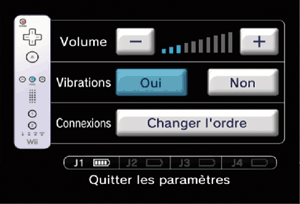

4 |
Utilisation de la manette |
 |
La manière de tenir la manette dépend de la configuration que vous utilisez.
 Télécommande Wii – position horizontale Note : veillez à toujours consulter le mode d'emploi de la manette que vous utilisez.


Note : si le guide de votre dragonne est muni d’un levier, abaissez-le jusqu’à ce que vous entendiez un clic. Cela permettra au guide de rester en place.
Cette procédure permet à la télécommande Wii de communiquer avec la console.
Il existe deux modes de synchronisation différents.
Mode standard – La procédure de synchronisation en mode standard sert à ajouter d’autres télécommandes Wii à votre console ou à effectuer une nouvelle synchronisation de votre télécommande Wii. Une fois synchronisée, la télécommande Wii le restera à moins que vous ne modifiiez cette configuration en la synchronisant avec une autre console.
Mode temporaire – Ce mode vous permet d’utiliser temporairement votre télécommande Wii sur une autre console ou d’utiliser la télécommande Wii d’un ami avec votre console. Il n’efface pas le mode standard sauvegardé dans la télécommande Wii. Dans ce mode, la télécommande Wii communique avec la console tant que celle-ci reste allumée. La synchronisation est perdue une fois que la console est éteinte.
Note : seule une télécommande Wii en mode standard peut allumer ou éteindre la console.
Note : assurez-vous que des piles sont insérées dans la télécommande Wii.
Synchronisation en mode standard

Cette procédure doit être effectuée à chaque fois que vous ajoutez une télécommande Wii à votre console.
Synchronisation en mode temporaire
Note : ce mode vous permet d’annuler temporairement la configuration en mode standard de toutes les télécommandes Wii tant que la console reste allumée. Une fois la console rallumée, les télécommandes Wii fonctionneront à nouveau en mode standard.


IMPORTANT : si votre télécommande Wii perd la synchronisation avec la console et que vous n’arrivez plus à la synchroniser, veuillez vous référer au mode d'emploi Wii – Installation de la console (section Synchroniser votre télécommande Wii et la console Wii). Ne maintenez pas
|
 sur la télécommande Wii synchronisée à la console.
sur la télécommande Wii synchronisée à la console. et
et  sur les télécommandes Wii dont vous souhaitez modifier l’ordre, l’une après l’autre. Dans les parties en multijoueur, l’ordre des joueurs est déterminé par l’ordre dans lequel les télécommandes Wii ont été synchronisées.
sur les télécommandes Wii dont vous souhaitez modifier l’ordre, l’une après l’autre. Dans les parties en multijoueur, l’ordre des joueurs est déterminé par l’ordre dans lequel les télécommandes Wii ont été synchronisées.
 |
 |
 |